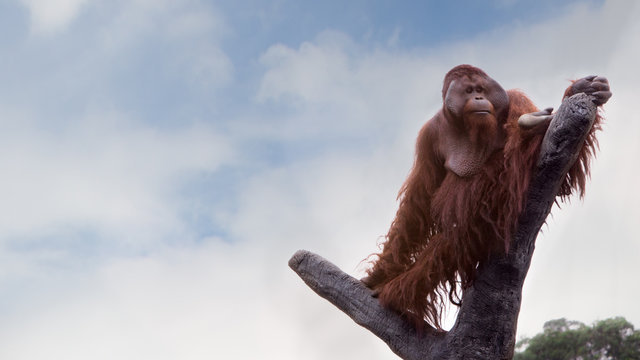

Pongo pygmaeus
The Bornean Orangutan (Pongo pygmaeus) is one of humanity's closest living relatives, sharing approximately 97% of its DNA with humans. Found exclusively on the island of Borneo, it is the largest arboreal mammal on Earth — spending the majority of its life in the forest canopy, sleeping in freshly built nests of branches and leaves each night.
The Bornean Orangutan is classified as Endangered by the IUCN, with an estimated population of around 100,000 individuals remaining — a decline of more than 50% over the past 60 years. Three subspecies are recognised, found in different regions of Sabah, Sarawak, and Kalimantan.
Orangutans are extraordinarily intelligent and have a slow reproductive rate — females give birth only once every 7 to 8 years, producing one of the longest birth intervals of any mammal. This means populations recover very slowly from losses, making conservation of adults critically important.
The conversion of Borneo's lowland forest for oil palm plantations is the single biggest driver of orangutan habitat loss, destroying millions of hectares of forest over the past three decades.
Deliberate and accidental fires used to clear land for agriculture cause widespread destruction of orangutan habitat and directly kill individuals unable to escape the flames.
Orangutans are killed when they venture into plantations and perceived as crop pests. Mothers are killed so their infants can be captured and sold into the illegal pet trade.
Illegal logging opens up forest areas to further encroachment and hunting, and degrades the forest quality that orangutans depend on for food and nesting sites.
Centres such as the Sepilok Orangutan Rehabilitation Centre in Sabah rehabilitate orphaned and injured orangutans and prepare them for a return to the wild.
A transnational conservation area spanning Malaysia, Indonesia, and Brunei works to protect the remaining core forests of Borneo that sustain the majority of the orangutan population.
WWF-Malaysia and partners advocate for RSPO (Roundtable on Sustainable Palm Oil) certification and deforestation-free supply chains to reduce the palm oil industry's impact on orangutan habitat.
Regular aerial and ground surveys monitor orangutan population density across Sabah and Sarawak, providing data to guide habitat protection decisions.